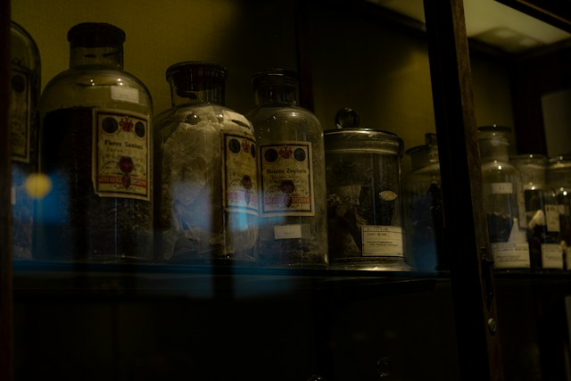

Våra Rum
Pris: 400 kr/person/rum
Inskrivningen
1991 ska St. Vincent's stängas, de sista patienterna flyttas. Men en patientjournal är spårlöst försvunnen. Flera år senare hittas den gömd bakom en vägg. Datum har ändrats, sidor saknas och mystiska anteckningar fyller marginalerna. Någon har lämnat ledtrådar efter sig. Men försöker de hjälpa er att avslöja sanningen… …eller hålla er kvar för alltid?
★★★☆☆
♟ 2-6
◷ 60 min
Behandlingen

I den gamla behandlingsavdelningen hittar ni journaler från en patient som officiellt aldrig behandlades här. Ändå återkommer samma datum, rum och mystiska sifferkombination i flera dokument. Vad hände med patienten – och varför försökte någon radera alla spår? Lös mysteriet och hitta vägen ut innan tiden rinner ut. Hitta mönstret. Avslöja sanningen. Ta er ut
★★★★☆
♟ 2-6
◷ 60 min
Patienten
I den gamla behandlingsavdelning hittar ni journaler från en patient som officiellt aldrig behandlades här. Ändå återkommer samma datum, rum och mystiska sifferkombination i flera dokument. Vad hände med patienten – och varför försökte någon radera alla spår? Lös mysteriet och hitta vägen ut innan tiden rinner ut. Hitta mönstret. Avslöja sanningen. Ta er ut
★★★★★
♟ 2-6
◷ 60 min